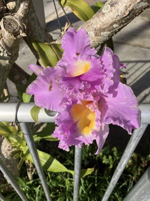
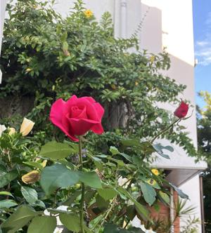

うるがいの話 ある日
最新: 新しいサンドフォント【うるがいの話 ある日】とは 一日だけのプログです
『うるがいの話』の最新一日だけのプログで、通信料が少なく経済的だ。カニの画像をクリックすると全ての日付が載る『うるがいの話』サイトを表示します
|
|
【うるがいの話】 うるがい(ｳﾙｶﾞｲ urugai)とは、『もずくがに』の名前でとても大きくなります。 |
|---|---|
|
|
【カミマヤーの話】 猫のことを方言でマヤーといいます。カミマヤー（kamimayaa）とは、神の猫のことです。 |
|
【たながぁの音楽】 たながぁ（ﾀﾅｶﾞｰ tanagaa）とは手長えびのことで、何種類かあり大きいのは車 エビぐらいになります。 |

|
【ぶながぁの話】 ぶながぁ(ﾌﾞﾅｶﾞｰ bunagaa)とは、赤い髪の毛、赤い身体、そして身長は１ｍ２０ｃｍ ぐらい、川の蟹を食べているの目撃された。場所は沖縄県国頭郡大宜味村のと ある村僕の隣近所に住んでいる爺さんから、聞いた話です。 |
|
|
【ギーマの話】 ギーマ(giima)とは、山原の里山に咲くスズランに似た、 花を付けます。実は食べられます、 気が付くと口の周りが紫になっています。 |
2026年01月19日 (月）新しいサンドフォント
15:16
中学生の頃、テレビでよくみた西部劇の映画、楽譜データを探し
出した。エンニオモリコーネの『荒野の用心棒』、ユーチューブ
動画を作成する。ふと、拳銃の音色を入れられないかと挑戦する。
ギター専用のＴｕｘＧｕｉｔａｒ（タブ譜や指版を使える無料作
曲ソフト）で拳銃の楽譜データを作り、それを動画で利用してい
る。ＭｕｓｅＳｃｏｒｅへ移植、上手くできた。三線の音色は作
ったばっかりの図書館から借りたＣＤの音だ。サウンドフォント
の音色のサンプルが、しっかりしているので音色に安定感がある。
では、最後に拳銃の音色があるユーチューブ動画をば
エンニオモリコーネ 荒野の用心棒テーマ １分２５秒
https://youtu.be/Cxe6Ccxa-7A

次には、箏のサウンドフォント。ＭｕｓｅＳｃｏｒｅの箏は、サ
ンプルが４個（三線は５個）で、ネットから入手したのは３８個
だ、演奏した音色はいいような気がするが、どうだろうか。
ちんぬくじゅしい 本調子 三線 ３分０３秒
https://youtu.be/lu7Zs7PVhrg
なお、新しいＭｕｓｅＳｃｏｒｅのソフトのサウンドフォントは、
古いＴｕｘＧｕｉｔａｒのサウンドフォントをそのまま、利用し
ていることにその筋の私は、ソフトを分析して知っている。
